In order to develop a user indicator, it is necessary:
ATAS.Indicators.dll, which is in the folder with the installed program, in the project.You can get examples from our GitHub repository here. You need to add the current version of ATAS.Indicators.dll in the references of this project.
Create a class library project in Visual Studio.
First, you need to install Microsoft Visual Studio, a development environment designed for working with the C# language, including creating various products such as DLL libraries. It is in this format that you can connect your own algorithms to ATAS. The free version of Visual Studio Community can be downloaded from the official website: visualstudio.microsoft.com//downloads/. Installation is standard, as for any other program. After installation, launch Visual Studio, select Create a new project and then Create Class Library (.NET).
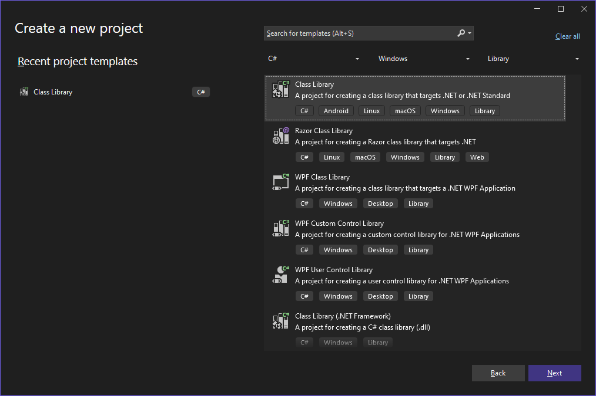
Select the name Custom Indicator for the project and its location in the file system.
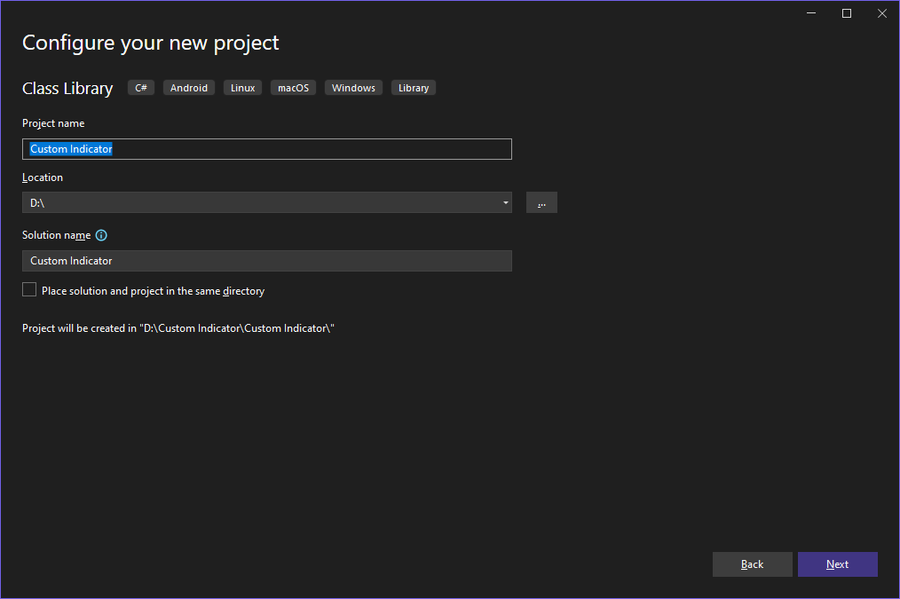
Select the framework version supported by your ATAS platform (.NET 8 or .NET 10 — see the note below). In this screenshot .NET 8.0 is selected as an example. Click Create.
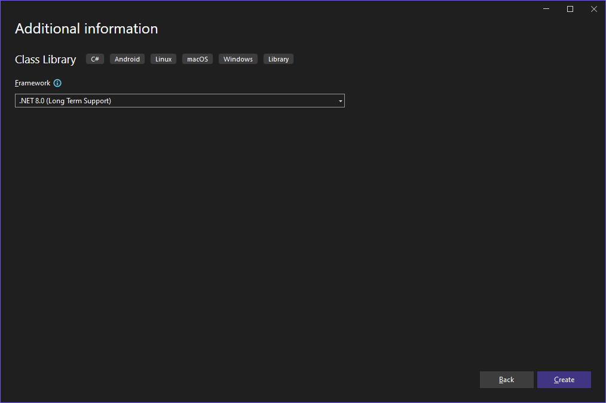
Note on the framework version. The target framework (
TargetFramework) must match the .NET runtime your ATAS platform runs on. Depending on the platform version this can be.NET 8or.NET 10.The platform version number shown in the lower-right corner of the main window does not directly indicate which .NET runtime is used — do not rely on it when choosing the framework. The most reliable approach is to build the indicator for both frameworks at once via multitargeting (
<TargetFrameworks>net8.0-windows;net10.0-windows</TargetFrameworks>): you get one assembly per runtime and deploy the one that matches your platform. This is especially convenient if you switch between platform versions (updating, rolling back to a previous build, etc.) with different runtimes.You do not need to set the C# language version explicitly — specify
<LangVersion>latest</LangVersion>and the newest syntax supported by your SDK becomes available (C# 14 for .NET 10).
When you start Visual Studio, it will automatically create an empty class library template.
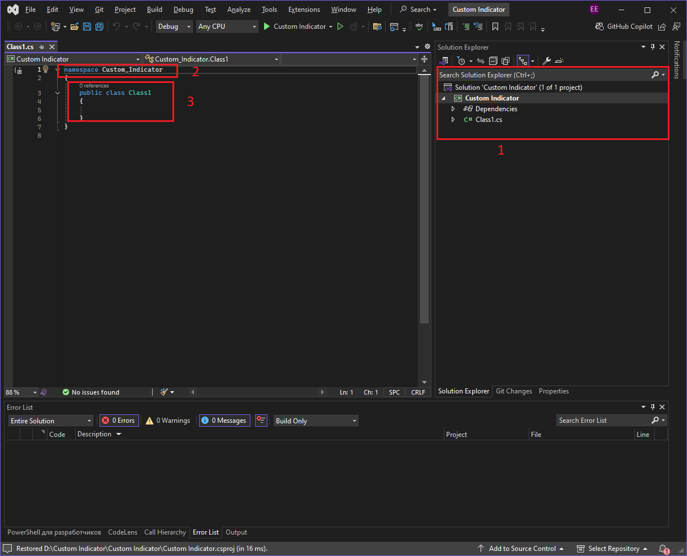
Main interface elements:
View menu. Other windows are available in this section, which can be enabled or hidden.Class1.cs file.namespace Custom_Indicator(2) is a namespace that groups code into a logical area, preventing name conflicts between different parts of the program.public class Class1 (3) — declaration of a class that is the basis of any C# project. This class will be the basis for our indicator.Add a link to ATAS.Indicators.dll, which is in the folder with the installed program, in the project.
Links to third-party libraries are added to expand the functionality of the project without having to write code from scratch. These libraries may contain ready-made solutions for working with databases, data processing, network interaction, graphical interface and other tasks. By connecting them, the developer saves time, uses proven code and simplifies project support.
Adding a reference to ATAS.Indicators.dll is necessary to gain access to the base classes and API used to develop custom indicators in the ATAS platform. This library provides the necessary methods and structures for working with prices, clusters, data from other indicators and their visualization on the chart. Without this reference, the project will not be able to interact with ATAS, and the indicator code will not compile.
To add references to the ATAS.Indicators.dll library, right-click on the Dependencies line and select Add Project Reference...
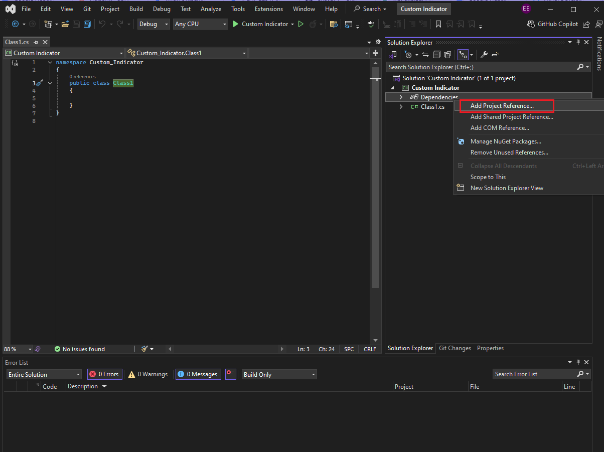
In the link manager window, click the Browse button.
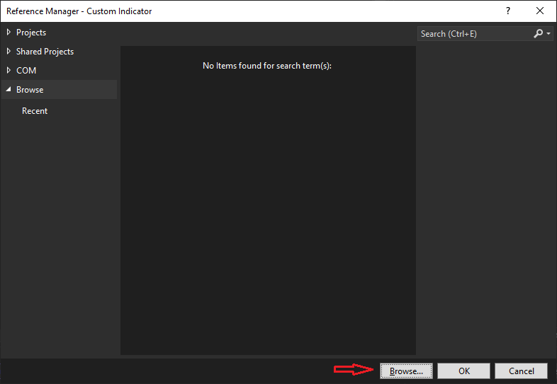
Go to the location of the ATAS platform and select the ATAS.Indicators.dll file. In this case it will look like this:
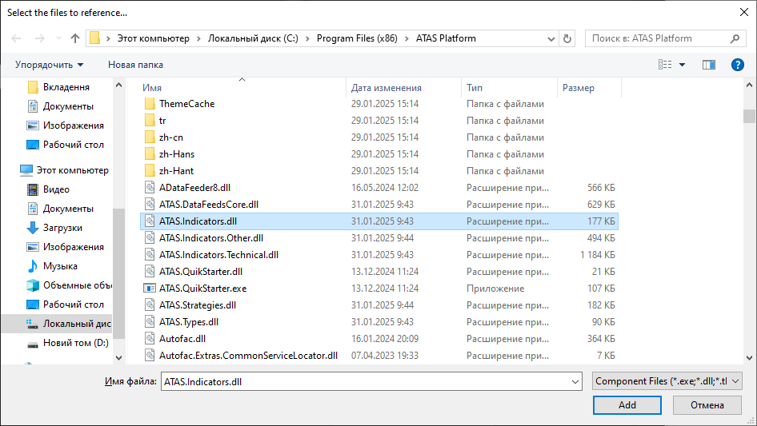
Now the ATAS.Indicators.dll library appears in the list of added libraries.
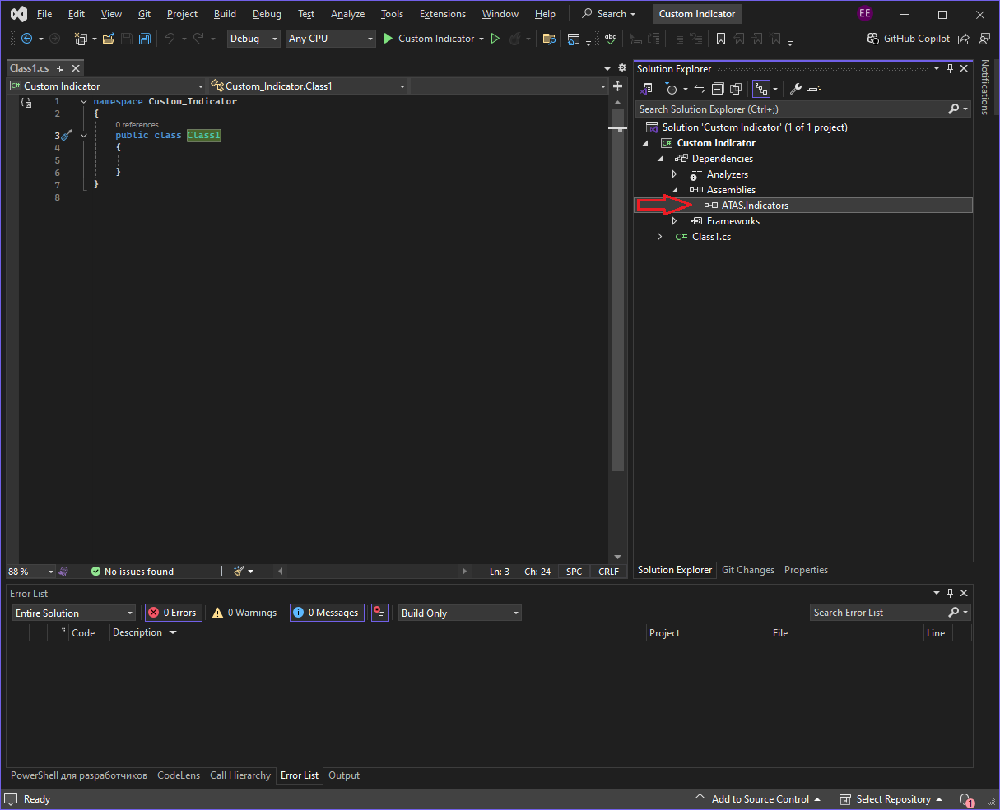
The Indicator class exposes a range of functionality to its derived classes, including access to price data, cluster information, results from other indicators, and additional advanced features.
Redefine the Indicator class.
Let's give our indicator the desired name MyCustomIndicator, inherit from the Indicator class, which became available to us after adding a link to ATAS.Indicators.dll, and at the top we need to add the line using ATAS.Indicators; - this is a link to the library we added.
After we inherited our class from the Indicator class, we got a red underline indicating a compilation error.
Hovering over the red underline reveals a tooltip indicating that our class must implement the abstract OnCalculate method defined in the Indicator base class.
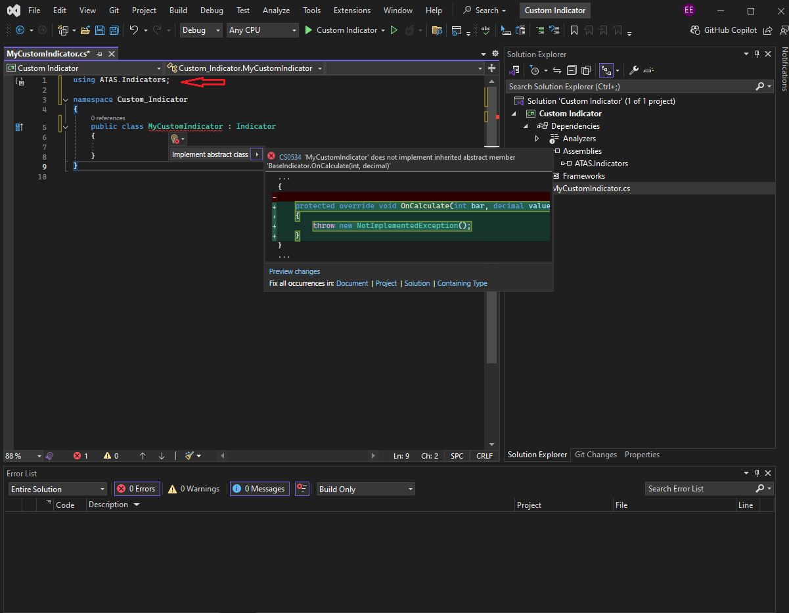
By clicking on this hint, the studio generates the method we need.
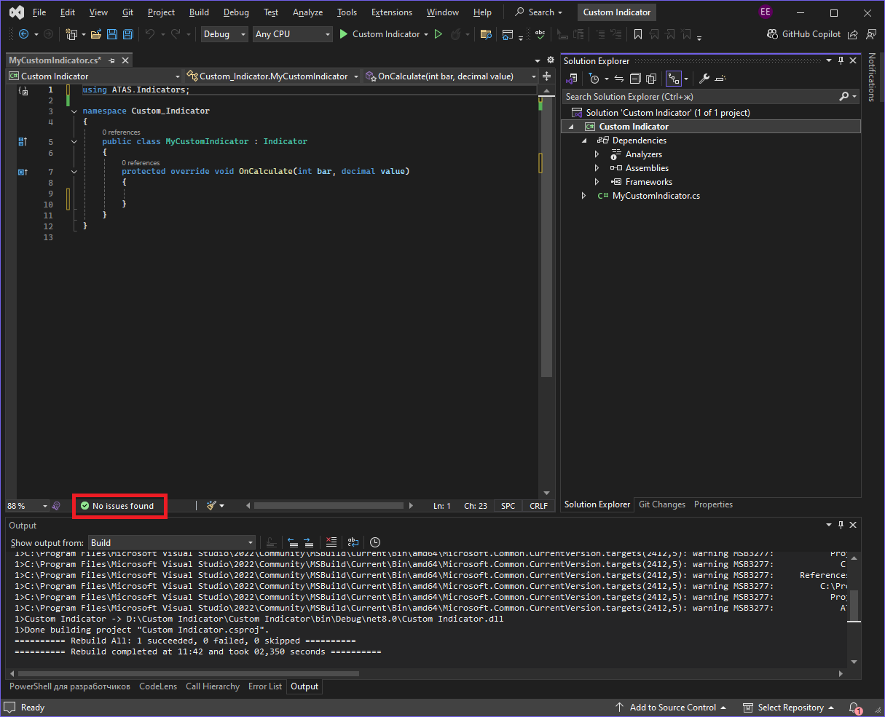
The line throw new NotImplementedException(); in the method is added by the method generator to cause an error if you forget to implement this method, it is a kind of reminder. To prevent the error from bothering us, we need to delete this entry.
Mandatory OnCalculate method and possible errors
In object-oriented programming, a method is a set of instructions that define the behavior of an object. In the Indicator base class, the OnCalculate method is declared as mandatory for overriding. This means that when adding a custom indicator to a chart, the trading platform will call the code placed inside the curly braces of the method.
The absence of the OnCalculate method will result in a compilation error - Visual Studio will not allow the DLL file to be built, since this method is required for correct interaction with ATAS. If the code is written correctly, the message No issues found will appear at the bottom of the Visual Studio interface. Otherwise, compilation errors will be displayed that need to be analyzed and corrected.
Possible causes of errors
OnCalculate and oncalculate are different identifiers).{}, semicolons ;, quotation marks "" and other symbols.OnCalculate method signature, which means it will not be recognized by the platform.Visual Studio automatically analyzes your code and provides hints, allowing you to quickly find and fix errors.
The OnCalculate method is called by the platform on each historical bar, and when it comes to the current bar - then at each change in the current price of this instrument, i.e. at each tick. The main calculations will occur in this method.
To build the project, right-click it in the Solution Explorer and choose Build.
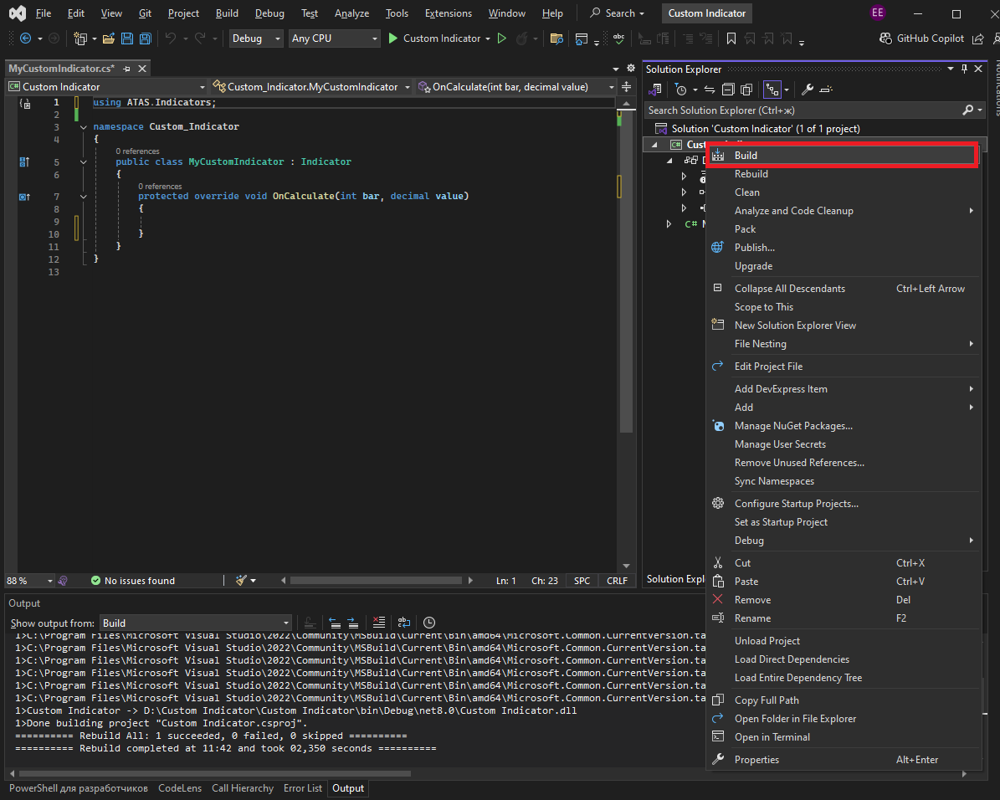
Finally, the Output window should display a message confirming that the code was successfully compiled into a file.
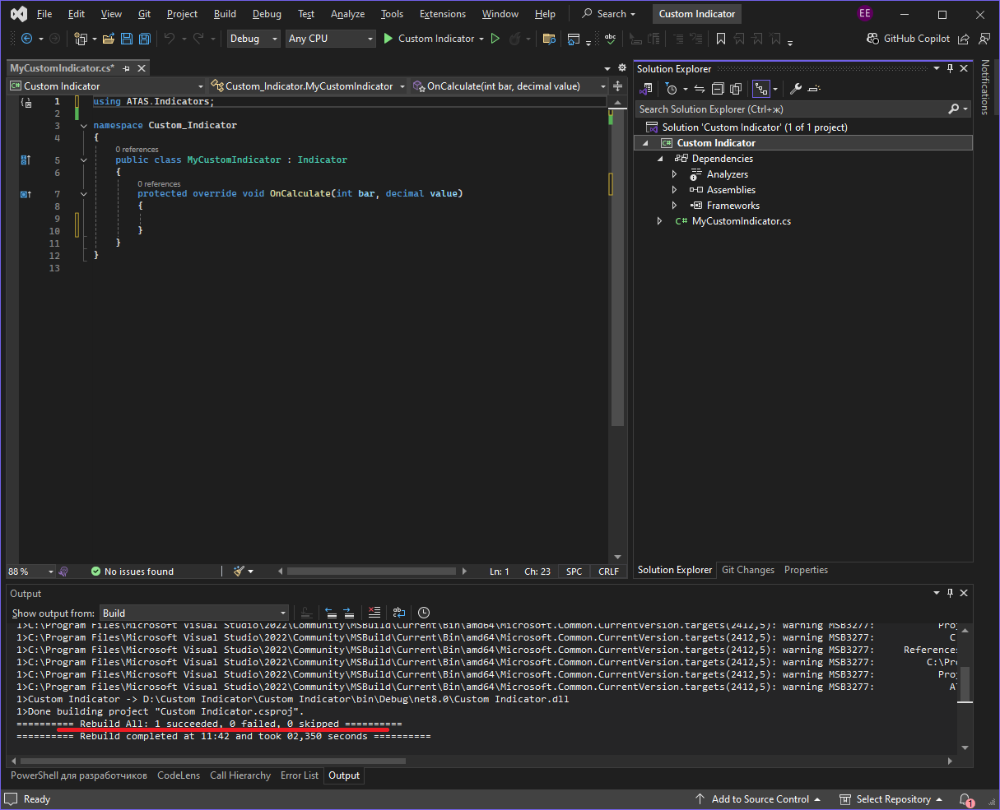
The compiled Custom Indicator.dll indicator file will be located at the following path: D:\Custom Indicator\Custom Indicator\bin\Debug\net8.0.
The name of the output folder (
net8.0,net10.0, etc.) depends on the selectedTargetFramework. Take the DLL from the folder that matches your platform's framework.
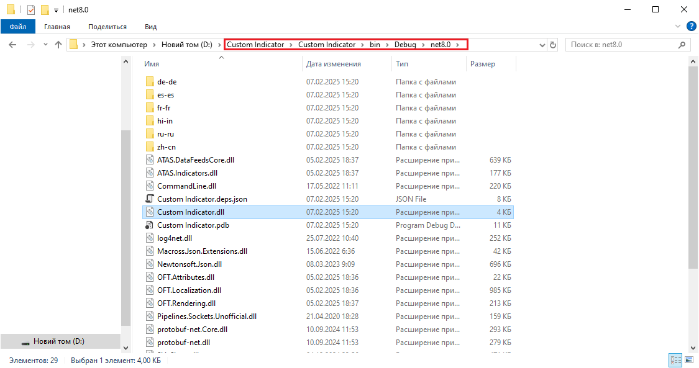
This file needs to be placed in the indicators folder.
Now you can add MyCustomIndicator to the chart, to do this, open the indicator settings, find the desired one and click on the Add button.
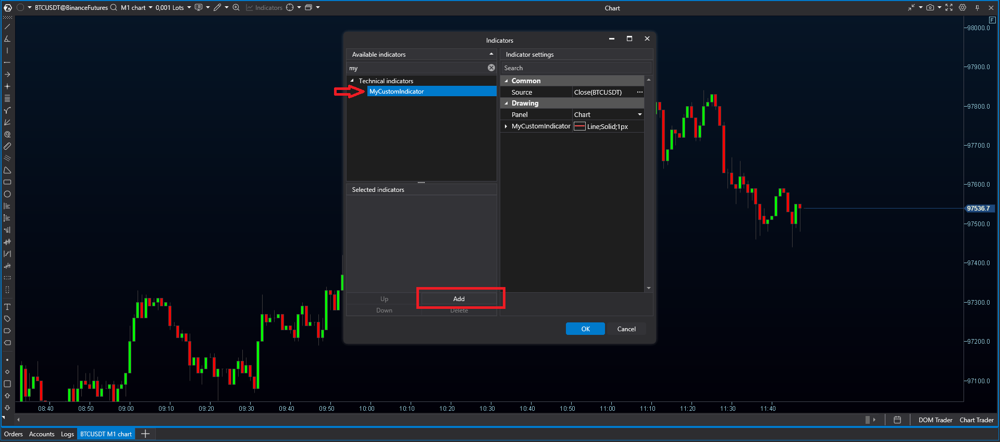
Nothing changed on the chart after this, because no logic was added to the indicator.
If you place the mouse cursor in the left area of the chart, you can see the name of our indicator in the list of loaded indicators in the upper left corner. When you hover over the inscription itself, the indicator control buttons will appear next to the inscription: open settings (1), hide/show (2), delete the indicator (3).
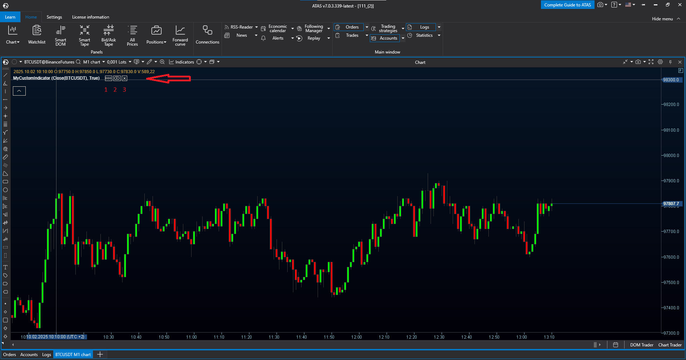
Adding logging
For a simple example, you can add logging capability to MyCustomIndicator.
Logging is writing a particular action or state of something to a log file. Logs can be used to determine the behavior of an indicator or the entire platform. Error and warning messages can be found there. Log files are stored in the …/ATAS/Logs folder next to the indicator folder.
To add the logging capability, you need to add a link to the Utils.Common.dll library, which is located in the same place as ATAS.Indicators.dll. (see above).
Once you add the reference, it will appear in the list of libraries in the right window of Visual Studio as shown in the screenshot below.
To record in the log, you need to use one of the following extension methods for the indicator, defined in the connected library Utils.Common.dll: LogInfo, LogWarn. Since these are extension methods, they need to be called using the following entry: this.LogInfo("message"). To record information, it is enough to call the LogInfo method. If you need to emphasize the importance of the information, you can use the LogWarn method, in which case the text in the log window will be highlighted in yellow.
It is also important to determine the location of the logging method call. If you call this method simply in the OnCalculate method without limiting the conditions, then the log entry will occur on every tick and this can spam the entire file. You need to carefully select the conditions for writing logs.
For a simple demonstration, you can override the indicator's OnInitialize method and write a log entry there. This method is called once when the indicator is initialized, so there won't be a lot of entries. You should also add using Utils.Common.Logging; at the top of the file.
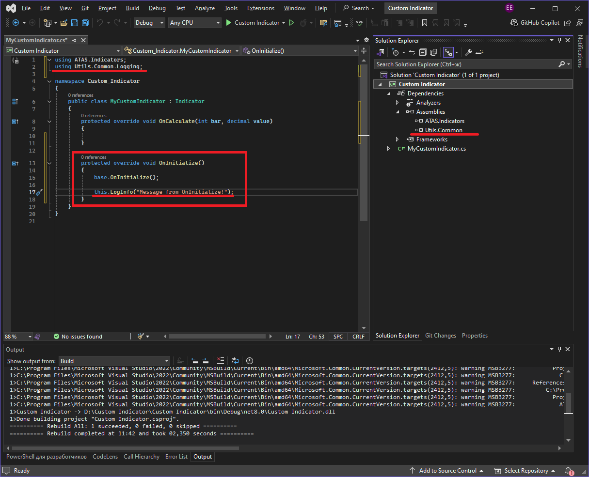
To check the result of changing our indicator, we need to rebuild the project again and place the newly built Custom Indicator.dll in the folder with indicators.
To open the logs tab, click the Logs button in the top toolbar. In the logs tab, you can see the entry we defined in the OnInitialize method: Message from OnInitialize!.
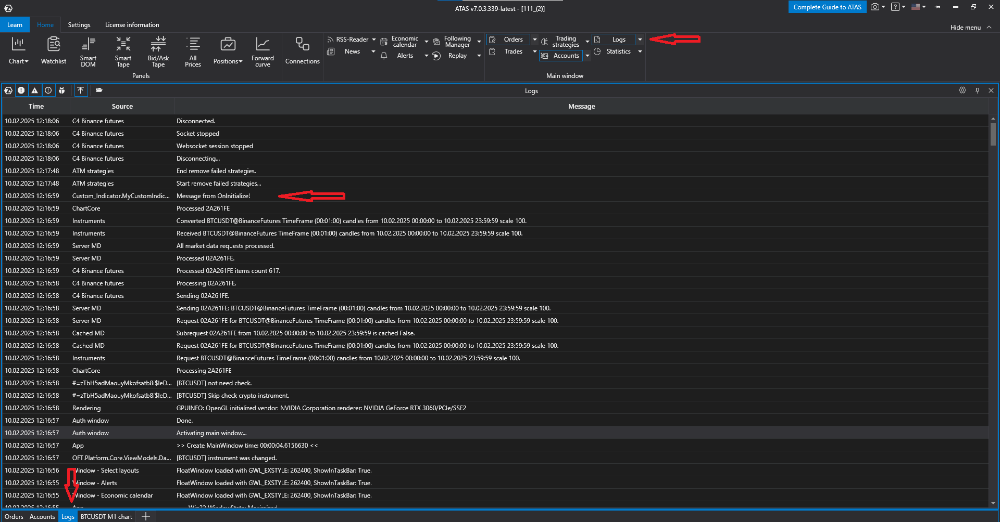
Using DataSeries
Data series are data arrays used by the indicator. Each array element corresponds to a specific candle. Candle numbering, and therefore data series elements, starts with 0. The number of candles on the chart is stored in the CurrentBar property and with the appearance of a new candle this value increases. If, for example, 100 candles are loaded on the chart, then the first will have the number 0, the second - number 1, the third - number 2, ... the last - number 99, and the CurrentBar will have the value 100.
It is important to remember the array numbering rules, because when accessing an array element by an index that the array does not have, for example a negative index or an index whose value is greater than the index of the last element, an exception will be thrown, after which the calculations are interrupted in this method. In our example, if 100 candles are loaded and we access candle number 100, an exception will be thrown, because the number of the last candle is 99.
ValueDataSeries
By default, the MyCustomIndicator indicator already has one data series of the ValueDataSeries type when created. This is a solid red line with a thickness of 1 pixel. Since we have not yet filled it with data, the elements of this data series have zero values, but its settings can be seen in the indicator settings window. In order to open the settings of the desired indicator, you can hover over it in the list of indicators in the upper left corner and click on the settings button (1). In the right part of the settings window, there are settings for this indicator and specifically the settings for the data series (2). When you click on a certain field, a description of this field will be displayed at the bottom (3).
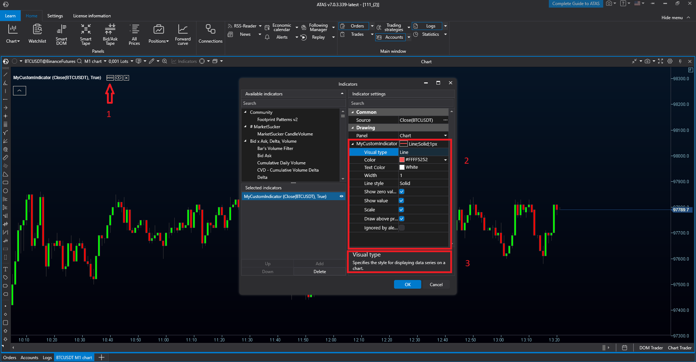
For a simple example of using a data series, we will display a line that connects candles on a chart by closing price. To do this, in the MyCustomIndicator.cs file, we will write the indicator constructor (1), find the default data series in the list of data series in the DataSeries property (it will be the first, therefore under index 0) and name it data (2).
Since DataSeries stores objects of the IDataSeries type, it is necessary to explicitly cast it to the ValueDataSeries type using the entry DataSeries[0] as ValueDataSeries. Let’s access this data series in the constructor and set its color (3) and display type - line (4).
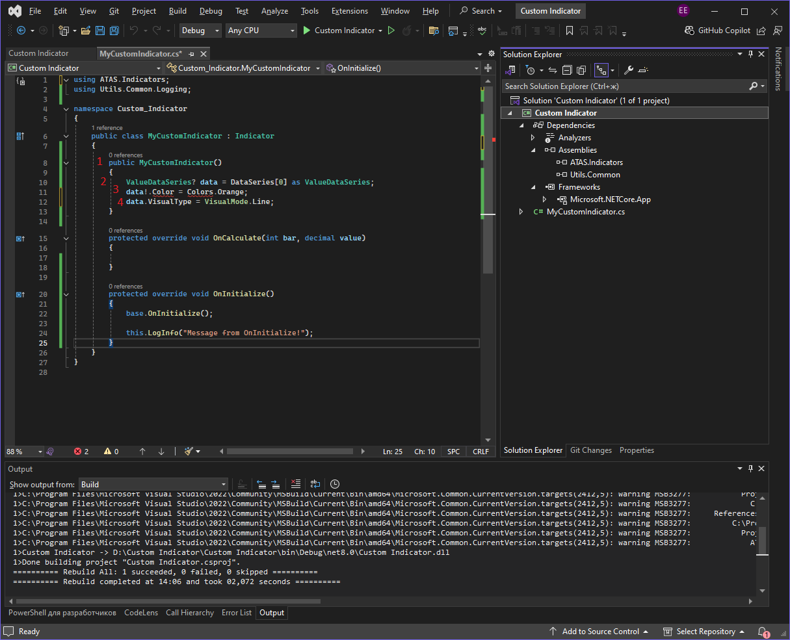
Now you can see that when we access the color of the data series, the Color property is underlined in red, indicating a compilation error. To remove it, you need to connect the PresentationCore.dll library. This can be done in several ways, and the easiest is:
Custom Indicator.csproj by double-clicking on it (1),TargetFramework (3),<UseWPF>true</UseWPF> (4),Frameworks list (6).After that, properties of the Color type will be available.
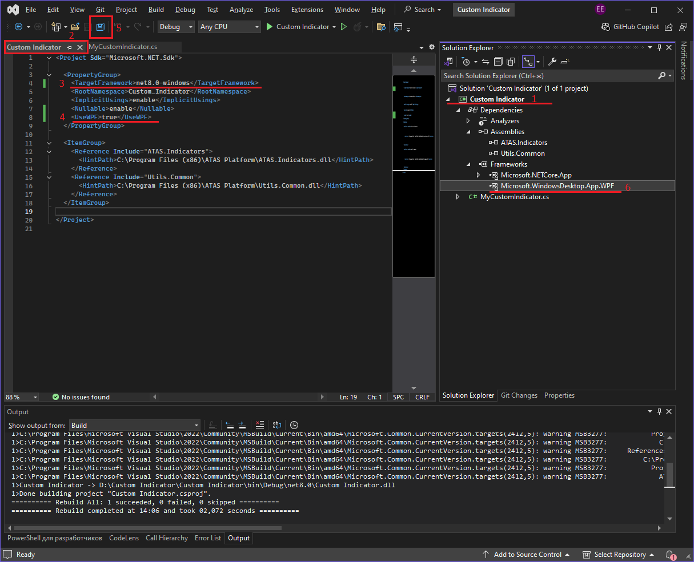
In the MyCustomIndicator.cs file, add using System.Windows.Media; at the top and the compilation errors will disappear.
In the OnCalculate method, we get the default data series and assign the value (by default, this is the candle closing price) obtained from the parameters to the element with the bar index. Now you don't have to worry about the correct index value, because the bar value received from the parameters will always be correct.
Again, you need to compile the project and place the finished Custom Indicator.dll library in the folder with indicators.
As a result, a line with the orange color we specified will appear on the chart, connecting the candles at the closing price.
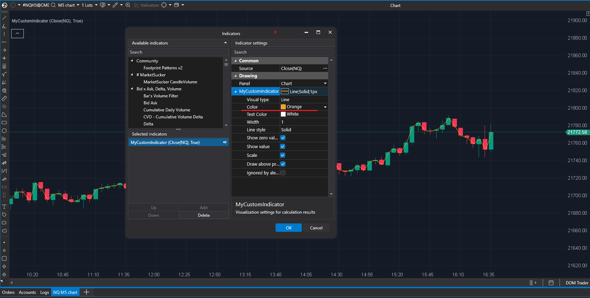
By default, the OnCalculate method receives the candle closing price in the value parameter. This parameter can be changed by clicking on the three dots in the Source field in the indicator settings window. In the window that appears, you can select:
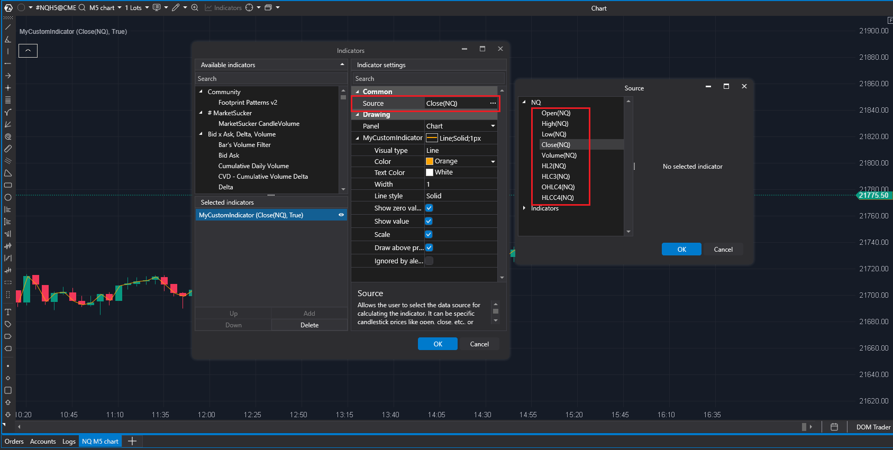
The Panel field allows you to select where the indicator data series will be displayed. If the Chart setting is selected in this field, the data series will be displayed on the chart itself, as in the previous example. If you select NewPanel, the displayed data series will move to the bottom panel of the chart.
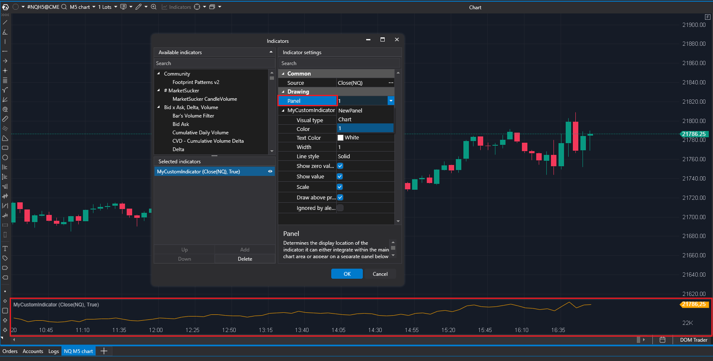
Working with candle data
To work with candle data, you need to get a specific candle and extract data from it.
The main data are:
To get data on a specific candle, you need to use the GetCandle(bar) indicator method and pass the bar index to the parameters. You should also remember that this method only accepts a valid index, i.e. positive and no greater than the last bar index. If you pass an invalid index to this method, an exception will be thrown. The last bar index will always be equal to CurrentBar-1.
Now we will implement an indicator that will receive candle data such as the maximum price and minimum price of the candle and display this data on the chart as two lines. For this, we will need two data series of the ValueDataSeries type. We have one from the previous example. The other one needs to be added. In order to more conveniently access the data series, we can place the default one, which is in the indicator, in a separate field called _highData (1). It will display the maximum prices. Let's give it the name High. It will be displayed when you hover over this line on the chart. We will leave the settings the same. For the second line, we need to create another field of the ValueDataSeries type, let's call it _lowData (2). It will display the minimum prices. The declared field needs to be initialized, i.e. assign a value to it using the entry private readonly ValueDataSeries _lowData = new("Low"); Using the keyword new, an object of the ValueDataSeries type will be created. The parameter must be a unique (within the given indicator) data series ID, which will also serve as the name. In this case, it is Low.
In order for a new data series to be displayed on the chart, you need to add it to the indicator data series collection (3) in the constructor.
In the OnCalculate method, we will fill it with data. To do this, we will create a candle variable and place the candle obtained using the GetCandle method in it, passing the index of the current bar (4). Below, in the _highData data series element with the bar index, we will place the maximum price, and in the same _lowData data series element - the minimum price (5).
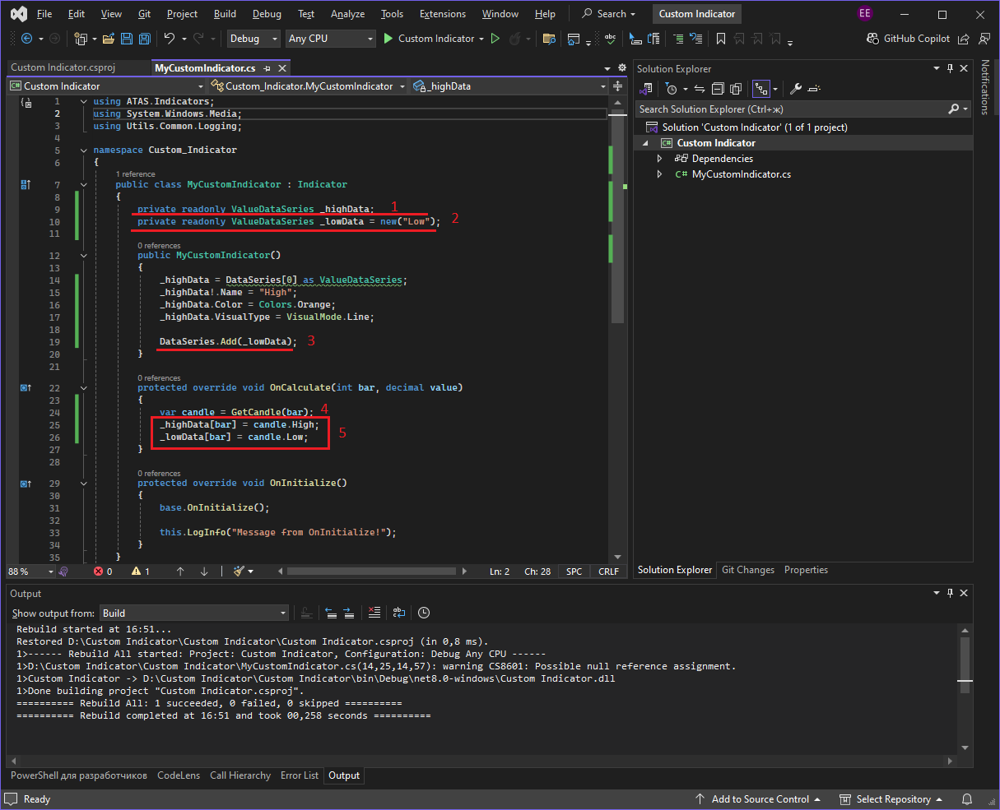
Again, you need to compile the project and place the finished Custom Indicator.dll library in the folder with indicators.
As a result, the chart will display 2 lines connecting the prices of the maximum and minimum candlesticks. In the indicator settings window, two groups of settings will appear with the names of our data series High and Low, by expanding which you can access the data series settings.
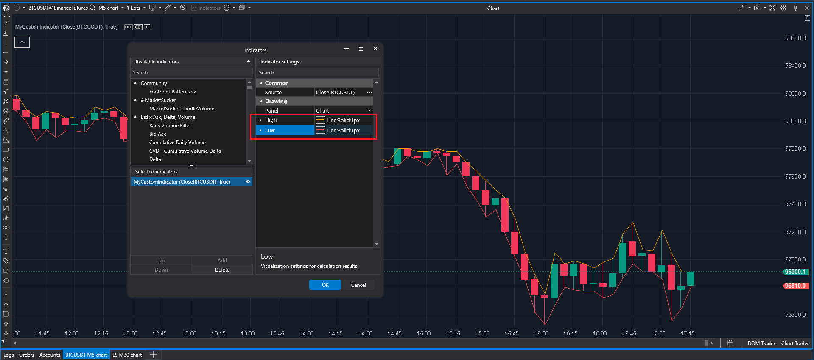
Custom indicator settings
It is possible to display the indicator settings defined by the user. For example, you can hide the settings of existing data series and display only the line color settings for the user. To hide a group of data series fields in the settings window, you need to set the IsHidden property to true (1).
To display the settings we need, we need to set them as public properties. In the getter, they will take values from the data series, and in the setter, the obtained values will need to be assigned to the corresponding properties of the data series. Let's define public properties with the Color type to set the color of the data series. Let's call them HighDataColor (2) and LowDataColor (3).
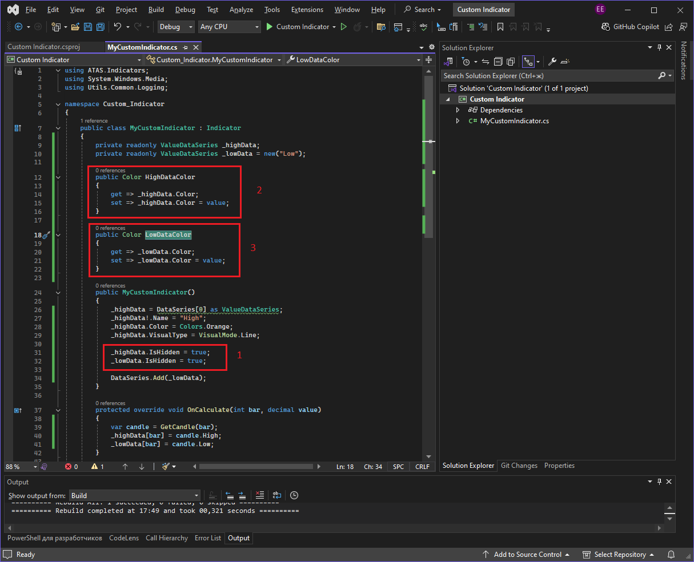
After these actions, the indicator settings window will hide the data series property groups and add new properties: HighDataColor and LowDataColor. Clicking on one of these fields will open a window with the choice of the desired color. The selected color will be applied to this line.
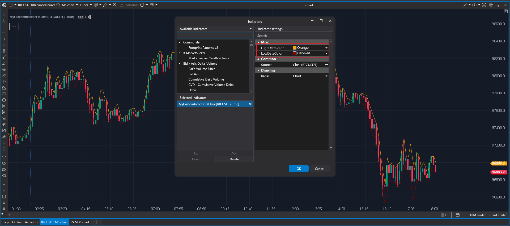
The names HighDataColor and LowDataColor are suitable for use in code, but they may not be very user-friendly. To provide more understandable names for custom properties, you can use the Display attribute.
To do this, simply add the [Display] attribute above the relevant property and specify the desired name in its string property Name, for example, High data color and Low data color. To use this attribute, you need to add the entry using System.ComponentModel.DataAnnotations; at the top of the file, where all the using entries are located.
Additionally, you can group these properties by specifying a group name using the GroupName = “Settings” property. Properties with the same GroupName will be grouped together.
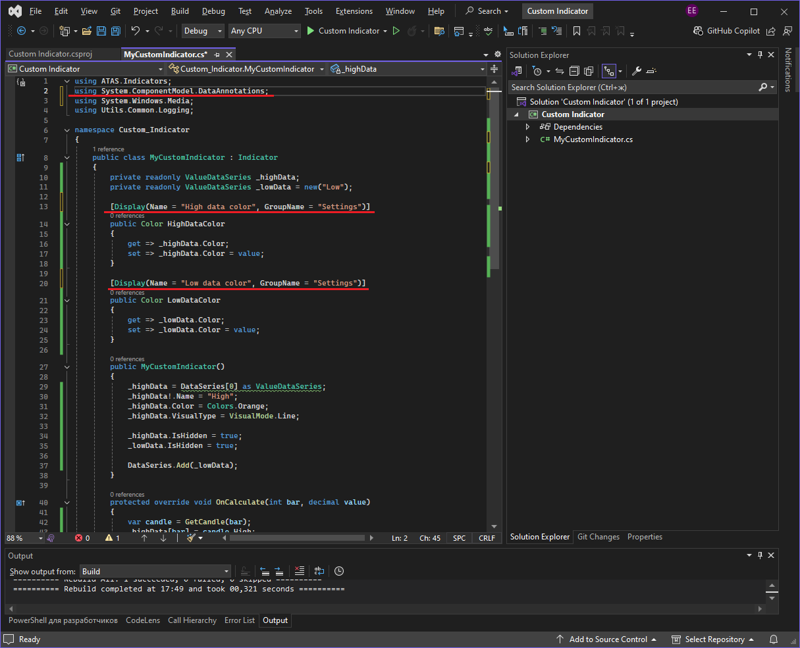
Again, you need to compile the project and place the finished Custom Indicator.dll library in the folder with indicators.
Now the settings contain clear names of properties and the desired group name for them.
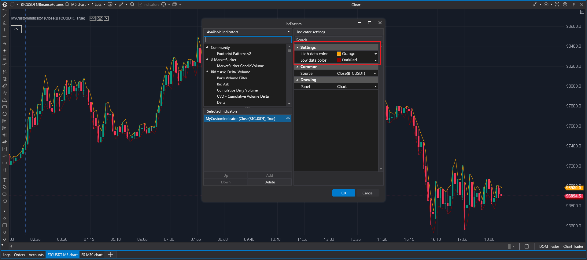
Working with other data series.
Working with the keyboard and mouse.
To install a user library:
Add custom indicator,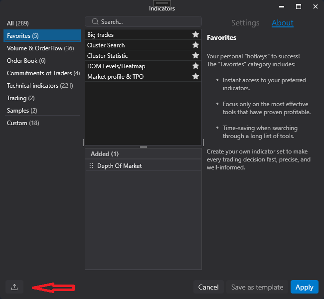
After this, the library with the indicator will be placed in the desired folder.
Alternatively, you can copy the library manually into the folder C:\Users\<Your_name>\AppData\Roaming\ATAS\Indicators.